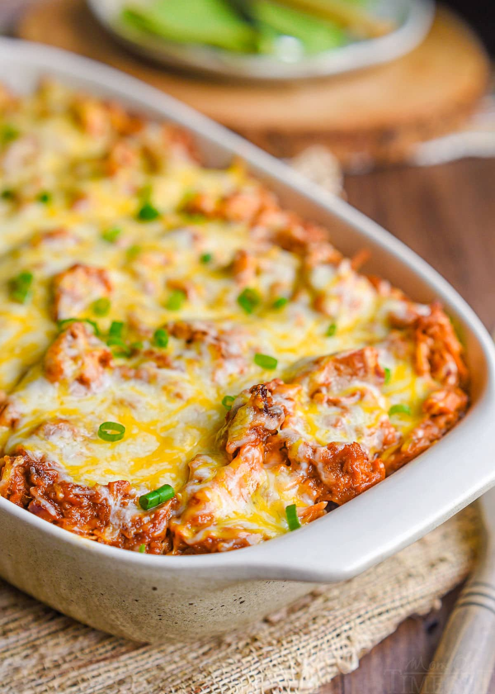
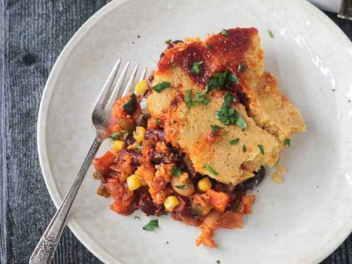
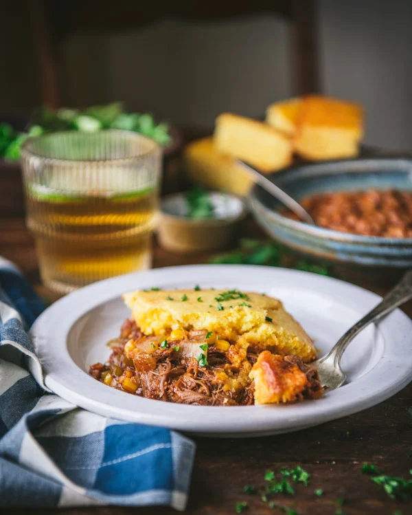

<html></html>
<head>
    <title>Flavor Fusion</title>
    <meta name="viewport" content="width=device-width, initial-scale=1">
    <link rel="stylesheet" href="recipesty.css">
    <link rel="stylesheet" href="https://fonts.googleapis.com/css?family=Zain|ABeeZee|Inter">
</head>
<body>
    <div class="header">
        <h1>Flavor Fusion</h1>
    </div>
    <div class="navbar">
        <ul>
            <li><a href="frontpage.html">Home</a></li>
            <li><a href="category1.html">Appetizers</a></li>
            <li><a href="category2.html">Main Courses</a></li>
            <li><a href="category3.html">Desserts</a></li>
        </ul>
    </div>
    <div class="name">
        <p style="font-size: 250%;">Pulled Pork Casserole</p>
    </div>

    <div class="scrolling-gallery">
        
        
        
        
    </div>

    <div class="desc">
        <div class="descinfo">
            <p>
                This pulled pork casserole with black beans and corn is an easy stir-together casserole that's perfect for a weeknight dinner or potluck. Top with pickled onions and coleslaw.
            </p>
        </div>

        <div class="time">
            
            <br> Total Time: 50 min
        </div>

        <div class="flip-card">
            <div class="flip-card-inner">
              <div class="flip-card-front">
                
                <br>
                Nutritional information
              </div>
              <div class="flip-card-back">
                <p>
                    Serving size: 1 of 8<br>
                    Calories: 578<br>
                    Total fat: 32g<br>
                    Carbs: 54g<br>
                    Sugar: 21g<br>
                    Protein: 20g<br>
                    Cholesterol: 125mg<br>
                    Sodium: 1343mg<br>
                </p>
              </div>
            </div>
          </div>
        
    </div>

    <div class="bottom">
        <div class="ingredients">
            <h2 style="text-align: center;">Ingredients</h2>
            <hr class="divider" style="width: 70%">
            <div class="checkbox">
                <form>

                    <p>
                        <input type="checkbox" name="ingredients" class="strikethrough">
                        <label>1 (12-ounce) package refrigerated sauceless pulled pork<br></label>
                    </p>
		    <p>
                        <input type="checkbox" name="ingredients" class="strikethrough">
                        <label>2 cups frozen whole kernel corn, divided<br></label>
                    </p>
		    <p>
                        <input type="checkbox" name="ingredients" class="strikethrough">
                        <label>1 (15-ounce) can black beans or kidney beans, rinsed and drained<br></label>
                    </p>
		    <p>
                        <input type="checkbox" name="ingredients" class="strikethrough">
                        <label>1 cup barbecue sauce<br></label>
                    </p>
		    <p>
                        <input type="checkbox" name="ingredients" class="strikethrough">
                        <label>1 (8.5 ounce) package corn bread mix<br></label>
                    </p>
		    <p>
                        <input type="checkbox" name="ingredients" class="strikethrough">
                        <label>1/2 cup butter, melted<br></label>
                    </p>
		    <p>
                        <input type="checkbox" name="ingredients" class="strikethrough">
                        <label>1 (8-ounce) carton sour cream<br></label>
                    </p>
		    <p>
                        <input type="checkbox" name="ingredients" class="strikethrough">
                        <label>1 large egg<br></label>
                    </p>
		    <p>
                        <input type="checkbox" name="ingredients" class="strikethrough">
                        <label>pickled onion (see Note) (optional)<br></label>
                    </p>
		    <p>
                        <input type="checkbox" name="ingredients" class="strikethrough">
                        <label>coleslaw (optional)<br></label>
                    </p>
		    <p>
                        <input type="checkbox" name="ingredients" class="strikethrough">
                        <label>1 (8-ounce) package shredded Cheddar cheese<br></label>
                    </p>

                    
                </form>
             </div>
        </div>        

        <div class="instructions">
            <h2 style="text-align: center;">Instructions</h2>
            <hr class="divider">
            <div class="steps">
                <ol type="1">
                    <li>Preheat the oven to 350 degrees F (175 degrees C). Combine pulled pork, 1 cup corn, beans, 1/2 of the Cheddar cheese, and barbecue sauce in a 9x13-inch baking dish; stir until evenly mixed. Gently spread in an even layer. </li><br>
	<li>Stir together cornbread mix, remaining 1 cup corn, remaining Cheddar cheese, melted butter, sour cream, and egg in a bowl until well combined.</li><br>
	<li>Spoon cornbread mixture over the pulled pork, spreading evenly. </li><br>
	<li>Bake in the preheated oven until golden brown and cornbread is set (it will be a little moist), 30 to 35 minutes.</li><br>
	<li>Let cool 5 minutes before serving. Serve with pickled onion or coleslaw, if desired.</li><br>
                </ol>
            </div>
        </div>
    </div>
</body>
</html>